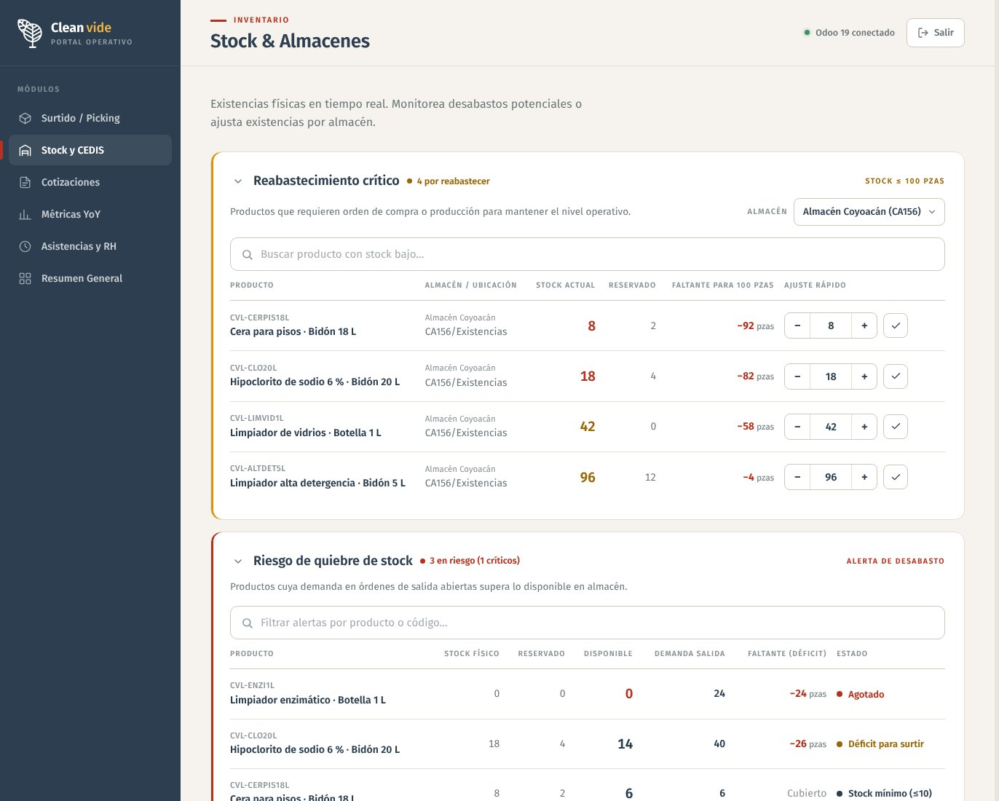
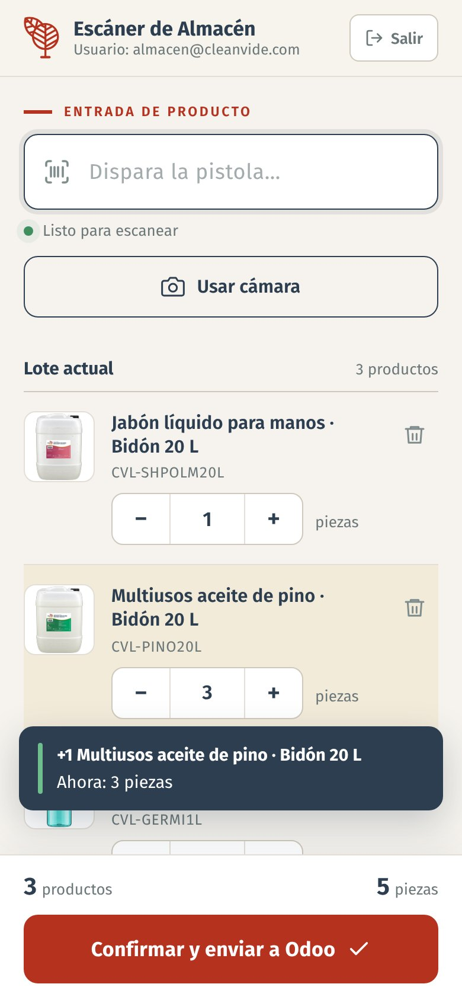
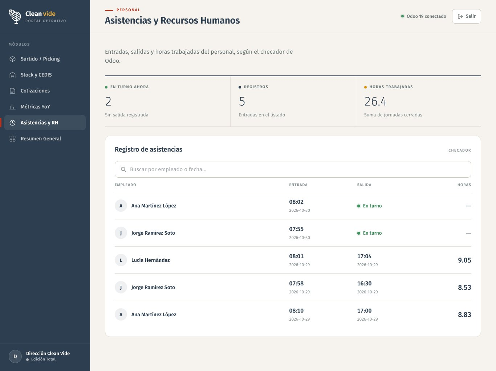
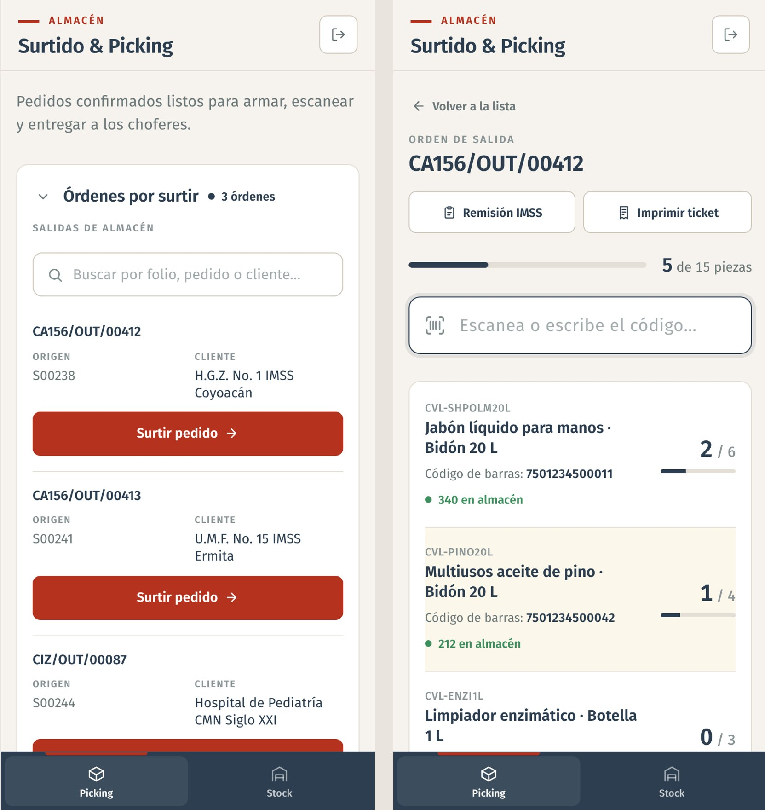
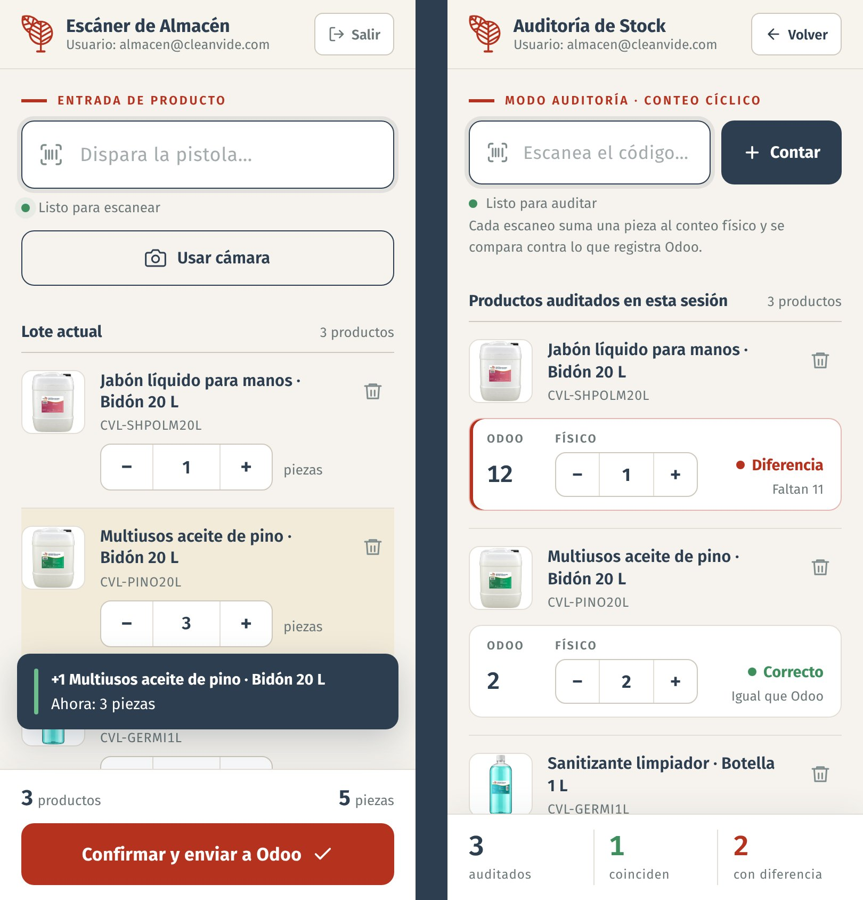
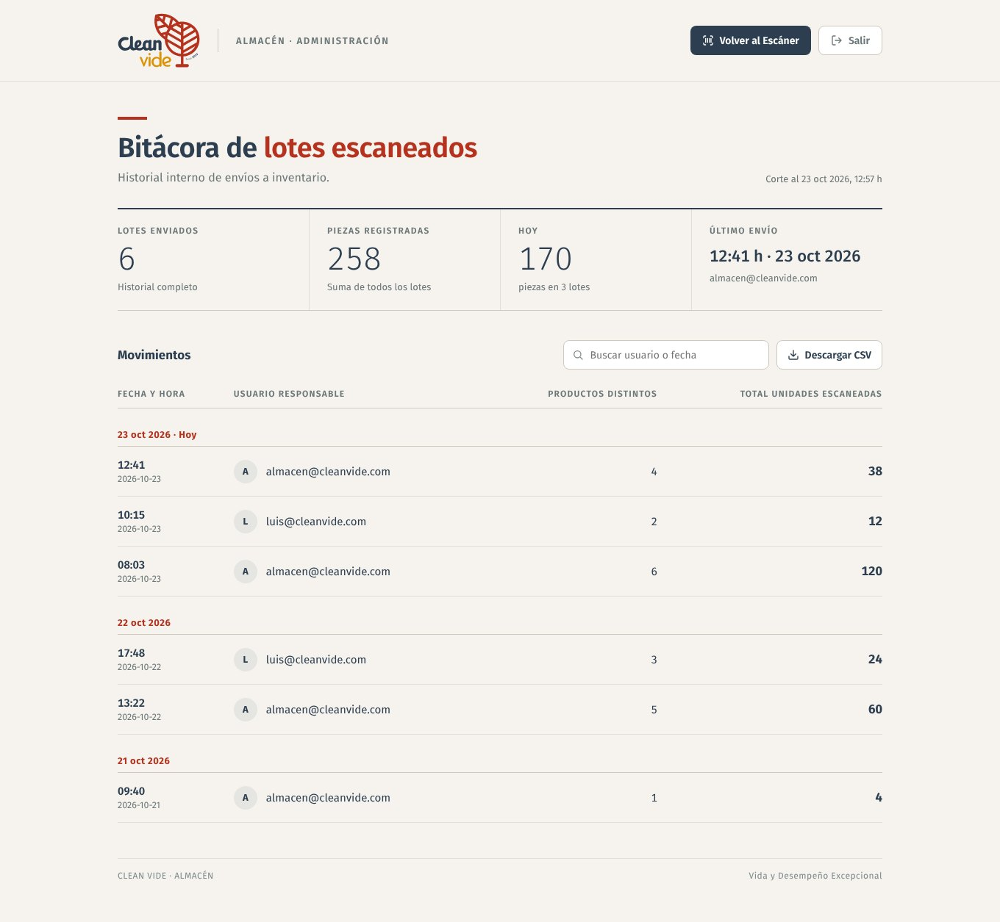

Sistema de Control Operativo
Cómo trabajaba Clean Vide, cómo trabaja hoy y cómo crece desde aquí.
Presentado por KAI Branding | Studio · Noviembre 2026
El camino recorrido
01
Una app genérica, sin identidad, sin flujo y sin control entre bodegas.
02
KAI diseñó cómo debía operar cada área y lo presentó de forma interactiva.
03
Cuatro portales conectados a Odoo.

04
Personal, inventario, procesos y producto bajo una misma disciplina diaria.
05
Lo que cambia
La operación diaria de Clean Vide, antes y después del sistema.
01
02
03
04
05
01
Pilar
Antes
Entradas y salidas sin un registro confiable.
No se sabía quién estaba en turno.
Horas difíciles de comprobar.
Ahora
Entrada, salida y horas por checador.
Quién está en turno, en tiempo real.
Cada movimiento ligado a un usuario.

Módulo de Asistencias y RH
By KAI Branding | Studio
02
Pilar
Antes
Existencias conocidas solo al contar.
Faltantes descubiertos tarde.
Cada bodega con su propia cuenta.
Ahora
Existencias en vivo por bodega.
Alertas de reabastecimiento.
Auditoría física contra sistema.
Módulo de Stock y Almacenes
By KAI Branding | Studio
03
Pilar
Antes
Cada quien surtía a su manera.
Pedidos armados de memoria.
Pasos que se olvidaban.
Ahora
Un mismo flujo para todos.
Avance del pedido pieza por pieza.
Remisión IMSS y ticket en la orden.

App de Surtido y Picking
By KAI Branding | Studio
04
Pilar
Antes
Productos identificados a simple vista.
Confusiones entre presentaciones.
Diferencias sin explicación.
Ahora
Cada pieza, por código de barras.
Se rechaza lo que no corresponde.
Conteo físico contra Odoo.

Escáner y Auditoría de stock
By KAI Branding | Studio
05
Pilar
Antes
Mermas sin responsable.
Movimientos sin evidencia.
Documentos informales.
Ahora
Usuario, fecha y hora en cada envío.
Mermas con foto y doble firma.
Remisiones formales sin precios.

Bitácora de lotes escaneados
By KAI Branding | Studio
Hacia adelante
Cada conector se suma a la misma base. Nada empieza de cero.
HOY
Matriz, Chilpancingo, Iztapalapa y Lerma en un solo sistema.
SIGUIENTE
Cada sucursal se suma con sus usuarios y permisos.
SIGUIENTE
Unidades, mantenimiento y costos de reparto.
SIGUIENTE
Comprobantes fiscales desde la operación.
SIGUIENTE
Prospectos y seguimiento comercial.
La inversión
Por otro camino
Licencias de ERP pagadas cada mes, por cada usuario.
Un implementador externo que no conoce la operación.
Cada desarrollo a la medida, cotizado aparte.
Odoo Enterprise: desde US$ 24.90 por usuario al mes, más IVA.
Con este sistema
Sin rentas por usuario: crece sin pagar más por cada cuenta.
Quien diseñó el flujo es quien lo mantiene y lo hace crecer.
Implementación, mantenimiento mensual y tarifas por conector, acordadas desde el inicio.
El detalle de la inversión se entrega en el documento de propuesta.
Siguiente paso
Autorizar la propuesta, iniciar el mantenimiento mensual y definir juntos el próximo conector.
By KAI Branding | Studio
3 minutos · con audio · By KAI Branding | Studio